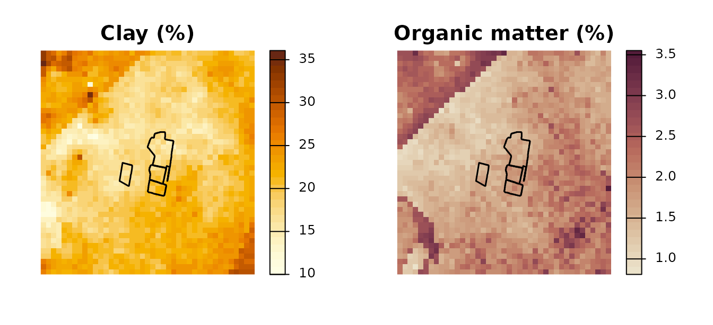
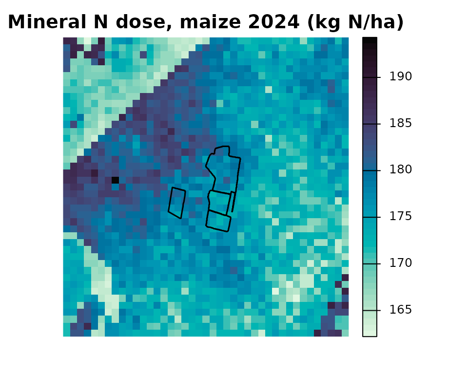
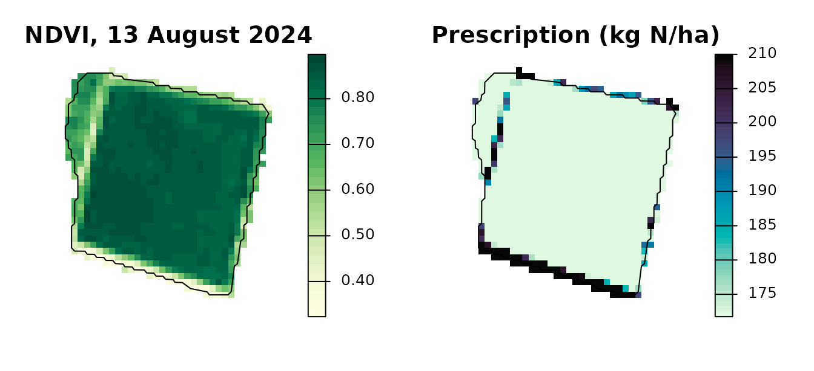

Spatial Nitrogen Balance and Variable-Rate Prescription
Source:vignettes/spatial-balance.Rmd
spatial-balance.RmdOverview
This vignette runs the spatial workflow of agrinutri on real data from the Po plain near Piacenza (Italy):
- Load the regional soil maps 0-30 cm (100 m grid) around a small farm, bundled with the package.
-
Compute a nitrogen balance for every pixel with
spatial_N_balance(). -
Check it against the field balance of
farm_balance(). -
Redistribute the field dose of one plot with a
Sentinel-2 NDVI and
variable_rate_N(), keeping its mean.
The field-scale balance provides the regulatory N target; the variable-rate functions move it in space under a mass-balance constraint.
1. Regional soil maps and the farm
rer_soil_piacenza.tif is a clip of the soil maps of
Regione Emilia-Romagna (CC BY 4.0) over the farm and 1.5 km around it:
clay and sand (percent), organic carbon (percent), total N (g/kg), Olsen
P and exchangeable K (mg/kg). spatial_N_balance() wants
total N, organic matter, clay, sand and the C/N ratio, so organic matter
and C/N are derived from organic carbon.
library(agrinutri)
library(terra)
#> terra 1.9.50
rer <- terra::rast(system.file("extdata/rer_soil_piacenza.tif", package = "agrinutri"))
soil <- c(rer[["ntot"]], # g/kg, as Ntot in N_balance()
rer[["corg"]] * 1.724, # organic matter, percent
rer[["clay"]], rer[["sand"]],
rer[["corg"]] * 10 / rer[["ntot"]]) # C/N
names(soil) <- c("TN", "SOM", "Clay", "Sand", "CNratio")
farm <- sf::st_read(system.file("extdata/piacenza_farm.geojson", package = "agrinutri"),
quiet = TRUE)
farm_v <- terra::vect(sf::st_transform(farm, terra::crs(soil)))
soil
#> class : SpatRaster
#> size : 43, 41, 5 (nrow, ncol, nlyr)
#> resolution : 100, 100 (x, y)
#> extent : 550300, 554400, 4975300, 4979600 (xmin, xmax, ymin, ymax)
#> coord. ref. : RDN2008 / UTM zone 32N (EPSG:7791)
#> sources : rer_soil_piacenza.tif (3 layers)
#> memory (2 layers)
#> varnames : rer_soil_piacenza
#> rer_soil_piacenza
#> rer_soil_piacenza
#> rer_soil_piacenza
#> rer_soil_piacenza
#> names : TN, SOM, Clay, Sand, CNratio
#> min values : 0.96, 0.81028, 10, 2.99, 3.5
#> max values : 2.4, 3.55144, 36.060001, 34, 14.299999
par(mfrow = c(1, 2), mar = c(1, 1, 2, 4))
terra::plot(soil[["Clay"]], main = "Clay (%)", col = hcl.colors(30, "YlOrBr", rev = TRUE),
axes = FALSE)
terra::lines(farm_v, lwd = 1.5)
terra::plot(soil[["SOM"]], main = "Organic matter (%)", col = hcl.colors(30, "BrwnYl", rev = TRUE),
axes = FALSE)
terra::lines(farm_v, lwd = 1.5)
2. A balance for every pixel
spatial_N_balance() calls N_balance() on
every non-NA pixel. Crop, yield, rainfall, previous crop and organic
history are scalars; the soil maps alone make the balance vary in space.
Here every pixel is computed as the 2024 grain maize of plot P01, with
the inputs stored in the farm layer.
p1 <- farm[farm$plot == "P01", ]
n_map <- spatial_N_balance(
soil_stack = soil,
expected_yield_tons_ha = p1$expected_yield_tons_ha,
crop = p1$crop,
ccp = p1$ccp,
oxygen_availability = p1$oxygen_availability,
winter_rain = p1$winter_rain,
start_spring_rain = p1$start_spring_rain,
prev_crop = p1$prev_crop,
source = p1$source,
fertorg_frequency = p1$fertorg_frequency,
location = p1$location,
forg_quantity = 0
)
terra::plot(n_map[["N_to_apply"]], main = "Mineral N dose, maize 2024 (kg N/ha)",
col = hcl.colors(50, "Mako", rev = TRUE), axes = FALSE)
terra::lines(farm_v, lwd = 1.5)
3. Pixels and field agree
The mean of the pixels that touch plot P01 is close to the field
balance computed by farm_balance() from the field means of
the same maps:
pix <- terra::extract(n_map[["N_to_apply"]], farm_v[farm$plot == "P01"],
fun = mean, na.rm = TRUE, touches = TRUE)[1, 2]
fld <- farm_balance(farm)$N_target[farm$plot == "P01"]
c(pixels = round(pix, 1), field = fld)
#> pixels field
#> 175.2 175.04. Variable rate inside plot P01
S2_piacenza_P01_20240813.tif is the Sentinel-2 Level-2A
scene of 13 August 2024 over P01 (reflectance scaled by 10000). The NDVI
drives the Holland-Schepers sufficiency index; the doses may range
between 80 and 120 percent of the field balance and their mean is
rescaled to it.
s2 <- terra::rast(system.file("extdata/sentinel-2/S2_piacenza_P01_20240813.tif",
package = "agrinutri"))
p1_v <- terra::project(farm_v[farm$plot == "P01"], terra::crs(s2))
ndvi <- terra::mask(compute_vi(s2, "NDVI", scale_factor = 10000), p1_v)
vr <- variable_rate_N(ndvi_raster = ndvi, n_dose = fld, method = "holland",
minN = 0.8 * fld, maxN = 1.2 * fld)
par(mfrow = c(1, 2), mar = c(1, 1, 2, 4))
terra::plot(ndvi, main = "NDVI, 13 August 2024", col = hcl.colors(30, "YlGn", rev = TRUE),
axes = FALSE)
terra::lines(p1_v)
terra::plot(vr$rate_raster, main = "Prescription (kg N/ha)",
col = hcl.colors(50, "Mako", rev = TRUE), axes = FALSE)
terra::lines(p1_v)
cat("Field balance: ", fld, "kg N/ha\n")
#> Field balance: 175 kg N/ha
cat("Prescription mean:", round(vr$mean_kg_ha, 1), "kg N/ha\n")
#> Prescription mean: 175 kg N/ha
cat("Range: ", round(vr$min_kg_ha, 1), "-", round(vr$max_kg_ha, 1), "kg N/ha\n")
#> Range: 171.7 - 210 kg N/haWhere the bounds clip many pixels, the mean can stay below the target: the bounds take precedence over the mass balance.
5. Export
The raster can be written as a GeoTIFF, or polygonised by
export_prescription() into any of the formats accepted by
on-board monitors (Shapefile, GeoJSON, KML, GeoPackage, John
Deere-ready, Trimble-ready, ISOXML TASKDATA):
terra::writeRaster(vr$rate_raster, "P01_prescription.tif", overwrite = TRUE)
export_prescription(vr$rate_raster, "TASKDATA", format = "isoxml",
isoxml_opts = list(task_name = "P01 top-dress", product = "Urea 46 pct", unit = "kg/ha"))
export_prescription_all(vr$rate_raster, "rx_bundle", "P01_2024",
formats = c("shp", "isoxml", "johndeere"))For machine-width strips along an A-B line instead of pixels, see
vignette("farm-and-prescription-map").
Data sources
Soil: Regione Emilia-Romagna, carte dei suoli 0-30 cm (tessitura;
sostanza organica; azoto totale, fosforo assimilabile, potassio
scambiabile), CC BY 4.0. Sentinel-2: Copernicus Sentinel data 2024.
Field boundaries delineated from Sentinel-2; rainfall from ERA5. See
?piacenza.